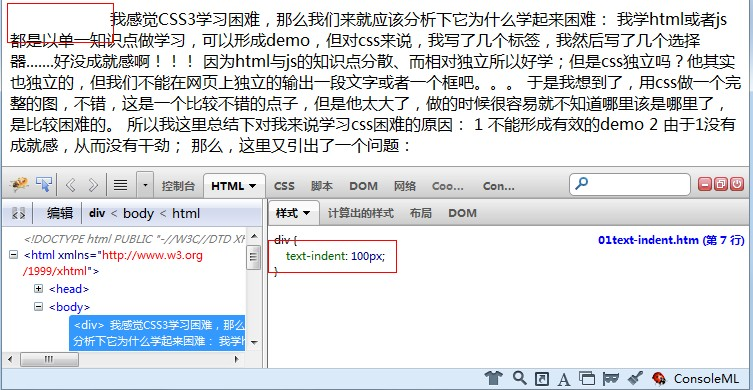
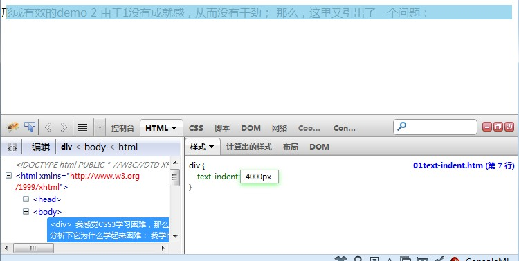
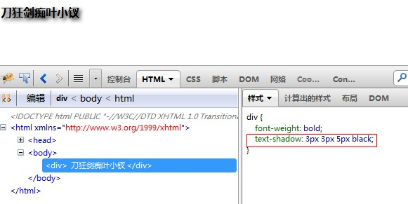
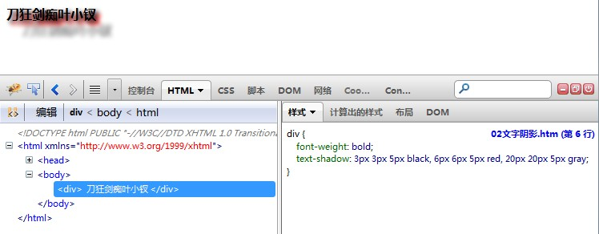

前言
2010年MIX大会上微软的工程师在介绍IE9时，以前端角度讲互联网发展分为了三个阶段：
1 以内容为主的web1.0网络，前端主流技术为html与css
2 以ajax为首的异步数据加载技术，热门技术是js/dom/异步数据请求
3 便是即将迎来的HTML5+CSS3的时代
PS：我记得大概08年的时候，ajax便在大事宣扬，但我私下发现周围会的人真心不多，应用也不多！！！
到今天5年过去了，你页面不是ajax的都不好意思拿出来说，于是我在想5年后若是页面不是html5的，好意思拿出来说吗？？？
因为，我css水平比较水，所以学习CSS3时候也顺便复习下css2的东西，真是一举两得啊！
因为这个系列都是边学边写的，可能会比较乱或者我唧唧哇哇说很多话，请各位同学见谅了。
抱怨的正文
关于选择器
哎，坑个爹！这篇文章开始的题目不是这个啦！！！他开始的题目是“css3初探之选择器”，我硬是在电脑面前呆若木鸡了将近半个时辰。。。
发现一个事实，css确实坑爹！想我上个星期学html5时，基本上每天都会知道学什么，每天都会知道学的东西是干什么的，但是CSS3呢？？
我们来看一下，他的第一章是“选择器”，我一看又多了属性选择器，里面还用到了正则表达式。。。。
对，确实是正则表达式，我在想我们很多重构工程师都是妹妹，而且都只会将图片变成html（我们原来的美工只会作图呢，要他形成页面就是折磨他折磨自己）。
现在选择器居然加上了一个这则表达式，这不坑爹吗？先不说效率会不会有问题，光说我就不会用的。
我们来看看CSS2中的选择器已经够了吧，我感觉都够用了，CSS3多出的其它选择器都可以接受，唯独这个与正则有关的。。。。
关于选择器在页面插入内容
若是上面那个问题还可以理解，可以结束，这个功能的出现，小的就直接以为他在坑爹了，他做了个什么事情呢，我们来看看。
css3提供了一个content属性，可以让我们在某个选择器元素后面插入文字甚至插入图片！！！
好吧，我忍了很久了，我们不是说好了吗？html控制结构，css控制样式，js控制行为，我倒是在想css3这个功能的出现究竟想干什么。。。。
就我看来无论什么提示信息都该属于html的一部分，就算与js有关也好啊！我尤其不能接受居然使用css输出的。
关于其它
然后我们再看看后面的内容，这不就靠谱多了吗？
文字与字体的样式相关盒模型相关样式
背景与边框
变形处理
动画功能
布局相关
......
瞧瞧下面这些，这些才对嘛，这些才是css3应该处理的问题嘛。
既然说它难，那它为什么难？
我感觉CSS3学习困难，那么我们来就应该分析下它为什么学起来困难：
我学html或者js都是以单一知识点做学习，可以形成demo，但对css来说，我写了几个标签，我然后写了几个选择器.......好没成就感啊！！！
因为html与js的知识点分散、而相对独立所以好学；但是css独立吗？他其实也独立的，但我们不能在网页上独立的输出一段文字或者一个框吧。。。
于是我想到了，用css做一个完整的图，不错，这是一个比较不错的点子，但是他太大了，做的时候很容易就不知道哪里该是哪里了，是比较困难的。
所以我这里总结下对我来说学习css困难的原因：
1 不能形成有效的demo
2 由于1没有成就感，从而没有干劲；
那么，这里又引出了一个问题：
如何学习CSS3
屁话，当然是慢慢学了，不能因为刚刚抱怨了一通就不学了，学习还是要讲诚信的，我们不能歧视，不能逃避。。。。。
我这里就从文字这块开始学习吧，在最后学习结束后再找2、3张图形成完整的页面，这样应该达到目的了！
文本缩进
text-indent 可以用于块级元素的文本缩进
 text-indent
text-indent

1 <!DOCTYPE html> 2 3 <html xmlns="http://www.w3.org/1999/xhtml"> 4 <head> 5 <title></title> 6 <style type="text/css"> 7 div { text-indent: 10px;} 8 </style> 9 </head> 10 <body> 11 <div> 12 我感觉CSS3学习困难，那么我们来就应该分析下它为什么学起来困难： 我学html或者js都是以单一知识点做学习，可以形成demo，但对css来说，我写了几个标签，我然后写了几个选择器.......好没成就感啊！！！ 13 因为html与js的知识点分散、而相对独立所以好学；但是css独立吗？他其实也独立的，但我们不能在网页上独立的输出一段文字或者一个框吧。。。 于是我想到了，用css做一个完整的图，不错，这是一个比较不错的点子，但是他太大了，做的时候很容易就不知道哪里该是哪里了，是比较困难的。 14 所以我这里总结下对我来说学习css困难的原因： 1 不能形成有效的demo 2 由于1没有成就感，从而没有干劲； 那么，这里又引出了一个问题： 15 </div> 16 </body> 17 </html>

若是设置负值的话文字将不会被显示：

文本对齐
text-align 会影响一个元素中文本的对齐方式；应用于块级元素
BUG
在IE6中会把text-align理解为center元素，导致完全居中，因为ie6中margin: 0 auto;居中不管用，所以这居然提供了一个居中的方法。。。
居中对齐还是比较简单的，我们就不做讨论了，下面来看看垂直对齐：
行高line-height是指文本行基线之间的距离，而不是指字体大小，他确定了将各个元素框的高度增加或减少多少（应用于多有元素）。
在最基本情况下，指定line-height可以用来增加（减少）文本行之间的垂直间隔；
但其实是line-height控制了行间距，即文本行之间超出字体大小的额外空间，再直白点：line-height和字体大小之差就是行间距。
文本行中每个元素都会生成一个内容区，它由字体大小确定，
这个内容区会生成一个“行内框inline box”，如果不存在其它因素这个行内框就完全等于元素内容区。
由line-height产生的行间距就是增加或者减少各个inline-box高度因素之一。
要确定一个给定元素的行内框，只需用line-height减去font-size，这个就是行间距（可能是负值），将之除以2便是元素inline-box
根据以上所述，我们可以得到两个结论：
1 当font-size大于line-height时，文本上下就会产生重合。
2 因为font-size固定以及line-height固定，所以可以得到相同的行间距，其实也就确定了每个元素的inline-box了。
另外，若不给line-height设置值，他将会是font-size的1.2倍。
文字阴影
可以使用text-shadow给页面上的文字添加阴影效果
text-shadow: len len len color;
第一个参数为横向偏移距离
第二个参数为纵向偏移距离
第三个参数为阴影的模糊半径
最后一个为颜色
几个属性可以不写

话说带阴影的字真好看，若是作为标题神马的还真是不错，而且一个文字可以指定多个阴影：

文本自动换行word-break
原来ie浏览器就支持该属性了，现在其他浏览器也支持了，所以我们貌似可以直接拿来用。
浏览器本身自带换行功能，但若是一个单词过长或者数字过大，比如比尔的资金。。。那么浏览器估计就不能换行了，因为浏览器嫉妒。。。
这个时候我们一般用word-break: break-all解决之。
然后用word-wrap: break-word时浏览器不出现滚动条。
......此处省略4千字。。。
结语
莫名其妙的一章就看完了，说实话没什么感觉，而且时间用的比搞其他事情多，明天继续吧。。。